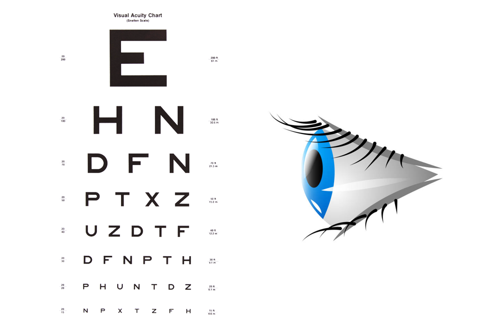

Your Neighborhood Medical Optometrist
Dr. Vrunda Patel is an independent optometrist providing comprehensive eye care inside the Walmart Vision Center in Bartow, FL, with services that go beyond routine vision checks to address medical eye conditions.
Trained at the Pennsylvania College of Optometry at Salus University in a one-of-a-kind prestigious program that admits only fourteen talented students per year, Dr. Patel combines a strong medical foundation with a warm, personal approach to care for patients of all ages.
- Thorough eye exams for glasses and contact lenses.
- Evaluation and management of conditions like glaucoma, dry eyes, and diabetic eye disease.
- Convenient location and hours inside Walmart Supercenter at Bartow, FL.
Dr. Vrunda Patel, O.D.
Doctor of Optometry
Salus University – Pennsylvania College of Optometry
Advanced Technology for Better Care
The office is equipped with modern diagnostic tools, including Optical Coherence Tomography (OCT), to catch issues earlier and manage disease more precisely.
OCT Imaging
OCT provides high-resolution cross-sectional images of the retina and optic nerve, helping detect glaucoma and other diseases before vision loss occurs.
This allows monitoring of subtle structural changes over time so treatment can be started or adjusted at the right moment.
Glaucoma Management
Combining OCT data with clinical examination and pressure measurements enables more accurate diagnosis and tracking of glaucoma progression.
Early detection and consistent follow-up significantly reduce the risk of permanent vision loss in glaucoma patients.
Dry Eye & Punctal Occlusion
For patients with chronic dry eye, tiny plugs can be placed in the tear drainage openings (puncta) to help natural tears stay on the eye longer and improve comfort.
This in-office procedure is quick, minimally invasive, and works alongside other dry eye therapies to reduce burning, irritation, and fluctuating vision.
Comprehensive Diagnostic Suite
Modern equipment supports a broad scope of practice, from monitoring diabetic eye changes to assessing macular conditions in addition to routine refraction. This technology-focused approach means patients can receive more complete care in a convenient setting.
Services Offered
From vision correction to medical eye care, the practice provides a full range of optometric services for the whole family.
Routine Eye Exams
- Glasses and contact lens prescriptions.
- Digital eye strain and computer vision evaluations.
- Children’s and adult comprehensive exams.
Medical Eye Care
- Glaucoma evaluation and ongoing monitoring.
- Red eye, infections, and minor eye emergencies.
- Diabetic and hypertensive eye health assessments.
Specialized Testing
- OCT imaging of the retina and optic nerve.
- Visual field testing for functional vision changes.
- Corneal and anterior segment assessments.
Location & Hours
The office is located inside the Walmart Vision Center at 1050 E Van Fleet Rd, Bartow, FL 33830.
Address
1050 E Van Fleet Rd
Bartow, FL 33830
Hours
Mondays: 9 - 5
Tuesdays: -----
Wednesdays: -----
Thursdays: 9 - 5
Fridays: 9 - 5
Saturdays: 9 - 2
Sundays: -----
Located Inside
Walmart Supercenter #580 – Vision Center
Phone
(863) 533-6073 (Vision Center)
Schedule Your Visit
To make an appointment for your eye exam,
- Call: (863) 533-6073 (Vision Center desk)
- Book online: here
- Visit: 1050 E Van Fleet Rd, Bartow, FL 33830.
Walk ins are always welcome! Patients are encouraged to bring a current medication list and their most recent glasses or contact lenses to help ensure a complete evaluation.
